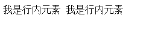
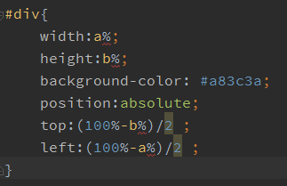

我的笔记
-
输入网址到看到页面中发生了什么
废话在前：在接触前端之前从来没有考虑过这样得问题，就好像我在吃饭的时候不会考虑这个米是怎么来的， 是怎样从无到有的。然而，现在看到了米会会想到它是谷子发芽再插秧再长成稻子然后用打谷机打出来的一粒粒的米， 再加水煮熟成了我碗里的饭。每次吃到香喷喷的米饭就会想到这样的一粒小小的米饭经历了多少才能来到我的碗里为 我提供能量维持我的正常生理运作，想到这里不禁感叹我的存在不只是因为我存在。同理，我现在打开一个网页， 我会像思考大米的来源一样思考“为什么我在浏览器输入了一个网址就能够去到我想要的页面呢？”世界是联系的， 我所看到的一切都是别人在我看不见的地方默默付出的结果,一想到这里我就有一种温热的感觉在心中涌动。
1.首先我们了解下网址的构成
以本站为例，"http://www.lynnlee.xyz/我的笔记.html"其实是个URL，也就是Uniform Resource Locator（统一资源定位符）的缩写，它包含了三个部分-
http:模式
模式是告诉浏览器是如何处理需要打开的文件的。最常见的模式是HTTP(Hypertext Transfer Protocol, 超文本传输协议)。
-
www.lynnlee.xyz:主机名
主机名就是这个文件所在的主机的名称。【主机：这里指的是虚拟主机VPS（Virtual Private Server 虚拟专用服务器)】
-
我的笔记.html:路径
路径包含到达这个文件的文件夹以及文件本身的名称（这些都是可选的）。如果例子中的路径是我的笔记， 那么这个index.html就位于我的笔记这个目录中。
2.浏览器查找网址（域名）对应的IP
www.lynnlee.xyz不是一个IP地址，所以DNS（域名系统）将这个网址解析成它对应的IP地址。这个IP地址 对应了网络上的一台计算器也就是刚才说到的虚拟主机VPS。如果地址不包含端口号，根据协议的默认端口号确定一个。 端口号之于计算机就像窗口号之于银行，一家银行有多个窗口，每个窗口都有个号码，不同窗口可以负责不同的服务。 端口只是一个逻辑概念，和计算机硬件没有关系。3.向之前确定的IP和端口发起网络连接。再根据http协议要求，组织一个请求的数据包，里面包含大量请求信息， 包括请求的资源路径、你的身份等。
4.服务器响应请求，将数据返回给浏览器。数据可能是根据HTML协议组织的网页，里面包含页面的布局、文字。 数据也可能是图片、脚本程序等。现在你可以用浏览器的“查看源代码”功能，感受一下服务器返回的是什么东东。 如果资源路径指示的资源不存在，服务器就会返回著名的404错误。
5.如果4返回的是一个页面，根据页面里一些外链的URL，例如图片的地址，按照1－4再次获取。
6.开始根据资源的类型，将资源组织成屏幕上显示的图像，这个过程叫渲染，网页渲染是浏览器最复杂、最核心的功能。
7.将渲染好的页面图像显示出来，并开始响应用户的操作。
以上是最基本的阐述，实际情况中每一步都可以有许多分支问题要解决。作为前端菜鸟的我，现在也就理解到了这个程度。 等我哪天有了更深的理解再来更新吧。

-
http:模式
-
各大浏览器特性
1.浏览器内核
- IE：trident内核，非开源。兼容性好。
- Chrome、safari:webkit内核，开源。启动快，速度快，耗内存。
- firefox：gekco内核，开源。扩展性强。插件定制方便。
- opera：presto内核，开源。快速。
2.国内常用（ke zi）浏览器
由于我们生活在安全的墙内，所以就先重点介绍国内的壳子浏览器们。
-
360系列
①360极速浏览器
- 极速模式：webkit内核
- 兼容模式：trident内核 低版本 （看我的大白眼）
- IE10模式：trident内核 IE10
②360安全浏览器
- 极速模式：webkit内核
- 兼容模式：trident内核 IE10
- 傲游浏览器：webkit内核
- QQ浏览器：trident内核 IE10
- 搜狗浏览器：webkit内核
- 猎豹安全浏览器：webkit内核
- UC浏览器：safari 内核
- 百度浏览器：trident和webkit双核
国内浏览器占比图
-
行内和块
1.区别
-
行内元素
行内元素也叫作内联元素，是指不会独占一行的元素。行内元素相对于块级元素来说较少，而且不那么具有“攻略性”。 方便理解点我认为行内元素没有块级元素那么“霸道”。两个行内元素在一起也能够在一行中“和平共处”。

这两个span是在一行中出现的
值得注意的是行内元素并没有宽高，所以即使给行内元素设置了宽高也是无效的。
如果想要让行内元素有宽高，则需要给元素的display属性设置为block.
常用的行内元素有：span img input button select strong 。
-
块级元素
与行内元素相对的是块级元素。既然相对，那么这两者在属性上也具有对立性。块级元素是独占一行的
而且块级元素的宽高是与生俱来的，display的默认值是block(行内元素display的默认值是inline）。块级元素包括：div ul ol lo dl dt dd h1 h2 h3 h4 h5......p
2.display属性
默认值
display属性的默认值有四个：block inline inline-block none 。 其中行内元素display默认值是inline，块级元素display的默认值是block。在这里重点说下后两个属性。
-
inline-block
这个属性值的作用是既可以让元素拥有行内的特性有可以拥有块级元素的特性。 举个例子。
可以清楚的看到图中的div没有独占一行（行内元素特性），又有了宽高（块级元素属性）。
-
none
none的中文意思是“没有”。一个元素的“展示”（display）“没有”了，就意味着这个元素消失了。
不曾存在过。需要注意的是display:none和visibility:hidden；是不同的，前者是让元素消失， html文档流中的后续元素会替补它的位置，而后者则是让元素隐形，并没有将元素从文档流中删除， 不会影响其他元素的位置。
-
-
隐藏元素的四种方法
1.display:none;
给元素设置display:none;的属性值之后，元素会在文档流中消失。后续的元素会替补这个元素的位置。2.visibility:hidden;
给元素设置visibility:hidden;的属性值之后，元素不会从文档流中消失，它的位置还在 ，但是不能用肉眼看见（我在嗦什么......）,也不会影响后续文档流中的元素的位置。3.opacity:0;
给元素的透明度设置为0。效果和第二种方法差不多，只是让元素隐形了。4.position
给元素设置position:absolute;left/top/right/bottom的值为负， 负的绝对值大于元素本身的宽度。也就是让元素“缩到页面外面”。5.margin
margin设置为负值，负的绝对值大于元素的宽度。 -
CSS实现元素居中的方法
1.position
注意：top和left的值需要计算下。
left值=(100%-width)/2 ,top值=(100%-height)/2 。 这是因为div的left/top的值并不等于50%，这个值应该是页面的宽高-div自身的宽高的差除以二才能达到居中的效果。 top/left的值是从盒模型的border算起的，而不是div的中间位置。2.margin
margin：0 auto；目前只能实现水平居中，垂直居中还不能实现。
3.flex
由于Flex一开始发布的时候兼容性并不好，浏览器之间的差异很大。 在2009-2015年之间W3C规范有了多次更新，浏览器支持程度也就有了差异。目前的兼容性支持：
Flex布局实现居中的效果:
-
响应式背景图片
1.插入img
宽度100%可以实现效果，但是高度自适应却有点复杂。 因为高度的百分比是相对于整个html的，所以要给html,body加上100%。
2.设置background-image
给body加上背景图片;背景图片的size属性值是cover;宽高百分比。
-
几种常用的自适应布局
1.左右两栏自适应布局
2.上下自适应布局
3.品字布局
4.圣杯布局（Flex，媒体查询）
HTML部分
CSS部分（宽度大于等于800px的时候）
效果（宽度大于等于800px的时候）
在屏幕宽度小于800px的时候使用媒体查询，改变中间三栏的布局